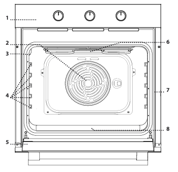
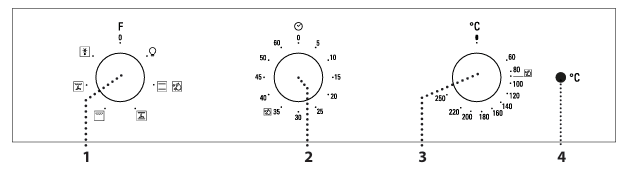
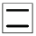
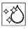
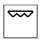
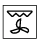
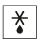
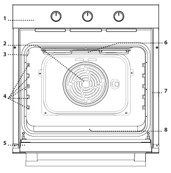

Oven
Description
- Control panel
- Fan
- Lamp
- Side racks
- Door
- Upper element / grill
- Serial-number plate (do not remove)
- Lower element (not visible)

Control panel
- Function knob
- Timer knob
- Thermostat knob
- Thermostat / preheating light

Functions
- Off: switches the oven off.
- Light: switches on the oven light.

Static: any dish on a single shelf; the 2nd level is best.
Diamond Clean: a low-temperature steam cycle that loosens dirt and food residues for easy cleaning.- Fan: cakes with liquid filling on a single shelf; also for baking on two shelves.

Grill: steaks, kebabs and sausages, gratins, toasting bread.
Turbo grill: large pieces of meat (legs, roast beef, chicken).
Defrost: speeds up defrosting.
Daily use
- Choose a function: turn the function knob to its symbol.
- Temperature: turn the thermostat knob to the temperature you want.
- Preheating: the thermostat light stays on while the oven heats up.
- Timer: turn the timer knob fully clockwise, then back anticlockwise to the time you want.
Cooking table
- Leavened cakes: 150-170 °C, 30-90 min, level 2.
- Filled cakes: 160-200 °C, 35-90 min, level 2.
- Biscuits / cupcakes: 160-180 °C, 15-35 min, level 2 or 3.
- Pizza / focaccia: 220-250 °C, 10-25 min, level 1 or 2.
- Lasagne / baked pasta: 190-200 °C, 45-65 min, level 2.
- Pork roast with rind: 180-190 °C, 110-150 min, level 2.
Cleaning
- Outside: a damp microfibre cloth.
- Inside: after each use, once the oven has cooled.
- Use Diamond Clean for a thorough cleaning of the inside.
- Soak the accessories in dishwashing liquid after use.
Tips
- Use Fan to cook different dishes on different shelves at the same time.
- Use dark metal trays, or pyrex/ceramic dishes, for longer cooking times.
If you have any problem, contact the host, Alessandro.
Forno
Descrizione
- Pannello comandi
- Ventola
- Lampada
- Griglie laterali
- Porta
- Resistenza superiore / grill
- Targhetta matricola (non rimuoverla)
- Resistenza inferiore (non visibile)

Pannello comandi
- Manopola di selezione
- Manopola timer
- Manopola termostato
- Spia termostato / preriscaldamento
Funzioni
- Off: spegne il forno.
- Luce: accende la luce interna.
- Statico: qualsiasi pietanza su un solo ripiano; meglio il 2° livello.
- Diamond Clean: ciclo a bassa temperatura con vapore che ammorbidisce sporco e residui per pulire facilmente.
- Ventilato: torte con ripieno liquido su un ripiano; anche per cotture su due ripiani.
- Grill: costate, spiedini e salsicce, gratinare verdure, dorare il pane.
- Turbo grill: grossi pezzi di carne (cosciotti, roast beef, polli).
- Scongelamento: velocizza lo scongelamento.
Uso quotidiano
- Scegli una funzione: ruota la manopola di selezione sul suo simbolo.
- Temperatura: ruota la manopola del termostato sulla temperatura che vuoi.
- Preriscaldamento: la spia del termostato resta accesa mentre il forno si scalda.
- Timer: ruota la manopola del timer tutta in senso orario, poi riportala indietro sulla durata che vuoi.
Tabella di cottura
- Torte lievitate: 150-170 °C, 30-90 min, livello 2.
- Torte ripiene: 160-200 °C, 35-90 min, livello 2.
- Biscotti / tortine: 160-180 °C, 15-35 min, livello 2 o 3.
- Pizza / focaccia: 220-250 °C, 10-25 min, livello 1 o 2.
- Lasagne / pasta al forno: 190-200 °C, 45-65 min, livello 2.
- Arrosto di maiale con cotenna: 180-190 °C, 110-150 min, livello 2.
Pulizia
- Esterno: panno in microfibra umido.
- Interno: dopo ogni uso, a forno freddo.
- Usa Diamond Clean per una pulizia a fondo dell'interno.
- Metti a bagno gli accessori con detersivo per piatti dopo l'uso.
Consigli
- Usa Ventilato per cuocere insieme cibi diversi su ripiani diversi.
- Usa teglie in metallo scuro, o pirofile in pyrex/ceramica, per le cotture lunghe.
Se riscontri problemi, contatta l’host, Alessandro.
Horno
Descripción
- Panel de mandos
- Ventilador
- Lámpara
- Guías laterales
- Puerta
- Resistencia superior / grill
- Placa de matrícula (no quitarla)
- Resistencia inferior (no visible)
Panel de mandos
- Mando de selección
- Mando del temporizador
- Mando del termostato
- Luz de termostato / precalentamiento
Funciones
- Off: apaga el horno.
- Luz: enciende la luz interior.
- Estático: cualquier plato en una sola bandeja; mejor el nivel 2.
- Diamond Clean: ciclo a baja temperatura con vapor que ablanda la suciedad y los restos para limpiar fácilmente.
- Ventilado: tartas con relleno líquido en una bandeja; también para cocinar en dos niveles.
- Grill: chuletas, brochetas y salchichas, gratinar verduras, dorar pan.
- Turbo grill: piezas grandes de carne (piernas, roast beef, pollo).
- Descongelar: acelera la descongelación.
Uso diario
- Elige una función: gira el mando de selección hasta su símbolo.
- Temperatura: gira el mando del termostato hasta la temperatura que quieras.
- Precalentamiento: la luz del termostato permanece encendida mientras el horno se calienta.
- Temporizador: gira el mando del temporizador del todo en sentido horario y luego vuelve atrás hasta la duración que quieras.
Tabla de cocción
- Bizcochos con levadura: 150-170 °C, 30-90 min, nivel 2.
- Tartas rellenas: 160-200 °C, 35-90 min, nivel 2.
- Galletas / magdalenas: 160-180 °C, 15-35 min, nivel 2 o 3.
- Pizza / focaccia: 220-250 °C, 10-25 min, nivel 1 o 2.
- Lasaña / pasta al horno: 190-200 °C, 45-65 min, nivel 2.
- Asado de cerdo con corteza: 180-190 °C, 110-150 min, nivel 2.
Limpieza
- Exterior: paño de microfibra húmedo.
- Interior: después de cada uso, con el horno frío.
- Usa Diamond Clean para una limpieza a fondo del interior.
- Deja los accesorios en remojo con lavavajillas después de usarlos.
Consejos
- Usa Ventilado para cocinar a la vez platos distintos en niveles distintos.
- Usa bandejas de metal oscuro, o fuentes de pyrex/cerámica, para las cocciones largas.
Si tienes algún problema, contacta con el anfitrión, Alessandro.